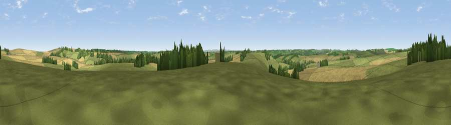

Viewpoint near Upper Lambourn
#25945 in England · top 36% of its area beats it · near Upper Lambourn · footpathWhere it is
The exact computed spot (SU 34825 81975). Click the marker for map links.
Public access: a public right of way passes within 22 m of this spot. Computed from Natural England's CRoW access layer and OpenStreetMap rights of way — not the legal definitive map. Always verify locally.
The view, rendered

A 360° render of this exact spot computed from the terrain model, tree cover and land cover — summer colours, afternoon light, calibrated against photographs of famous viewpoints. Real trees, hedges and buildings will differ in detail.
The panorama
Grey silhouette: terrain skyline in each direction (720 bearings, Earth curvature and refraction included). Dashed green: skyline with trees (+15 m) and buildings (+8 m) as obstacles. Blue strip: how far the ground is visible on each bearing.
Where the view opens
Wedge length = distance to the farthest visible ground on that bearing (vegetation-aware). Rings at 10, 25 and 50 km.
What fills the view
53% grassland · 40% cropland · 7% woodland
Angular shares of the visible panorama (visual magnitude), not map area. Landscape diversity 0.39 (0–1 Shannon).
Key numbers
More beautiful places nearby
The staircase of upgrades: each row has a higher view potential than everything closer. Driving times are estimates from straight-line distance, calibrated against real road routing — check an actual route before setting out.
| Place | Direction | Drive | Score |
|---|---|---|---|
| Hackpen Hill | N · 3 km | ~8 min | 59.2 |
| Smith's Hill | NE · 4 km | ~8 min | 61.2 |
| Seven Acre Hill | NNW · 4 km | ~9 min | 66.6 |
| Viewpoint near Kingston Lisle | NW · 6 km | ~12 min | 68.5 |
| Viewpoint near Woolstone | NW · 6 km | ~13 min | 70.9 |
| Viewpoint near Woolstone | NW · 7 km | ~14 min | 76.7 |
| Martinsell viewpoint | SW · 25 km | ~40 min | 76.9 |
| Viewpoint near Leckhampton | NW · 54 km | ~76 min | 77.8 |
51.53561, -1.49931 · source: screening · position refined by local search. Computed location — check access rights before visiting.